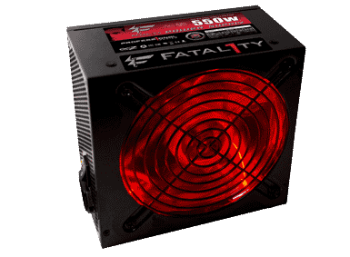
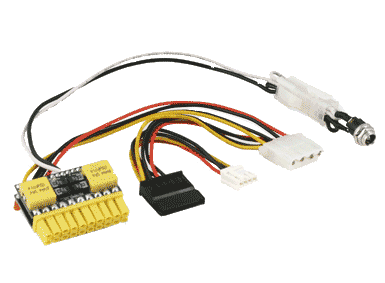

Power Supplies have become fairly standardized in recent years so as long as your not trying to replace an old power supply from a major vendors pre built PC such as Dell or HP then one of the handful of standard conventions should suit your needs.
An ATX power supply is the standard PSU form for most Desktop PCs.
They are available in watt range of 80watts to 1600watts and which one you will need really depends on what your going to add to your computer and what you are planning to use it for.
Additionally the main power and auxiliary power connectors may be different on your PSU than they are on your motherboard to pay close attention as to what your motherboard requires and what the PSU you have picked out supplies or you may find yourself having to get an adapter in order to make it work in your computer.
Options for main power connector are 20 and 24 pin and the options for auxiliary are 4, 6 and 8 pin so find out exactly what you need and make sure it will work.
Deciding how many watts you will need can be calculated but a good guess with a bit of head room will suffice.
The PICO PSU is becoming very popular in small form factor PC such as Media Center PCs.
Its small size allows for it to be used in a small computer case where a standard ATX PSU would not fit.
The PICO PSU should only be used in low watt systems that don't require much power to run on.
They can range in power between 50watts and 300watts.